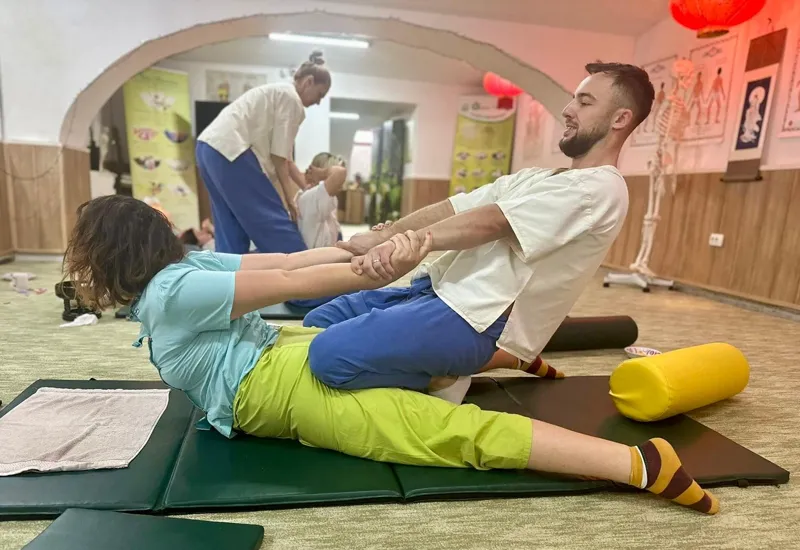
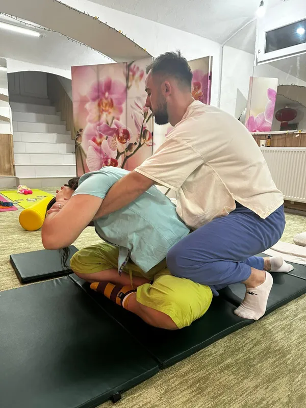

Masaj Terapeutic
Tratamente eficiente în cazul contracturilor musculare, problemelor de circulație și stărilor de suprasolicitare fizică, menite să stimuleze procesele naturale de relaxare și regenerare ale corpului.
Masaj Tailandez
Masajul tailandez tradițional este o terapie corporală sacră ce îmbină tehnici de presopunctură de-a lungul canalelor energetice (liniile Sen) cu întinderi și mobilizări pasive inspirate din posturile de yoga.
Spre deosebire de masajele clasice, acesta se execută pe o saltea specială la sol, purtând îmbrăcăminte lejeră. Terapeutul folosește mâinile, coatele, genunchii și chiar picioarele pentru a ghida corpul în poziții de stretching profund, oferind o deblocare articulară și o relaxare mentală de neegalat.
Beneficii specifice:
- Creșterea flexibilității și amplitudinii mișcării în toate articulațiile
- Îmbunătățirea semnificativă a posturii prin alungirea lanțurilor musculare scurtate
- Detensionarea profundă a spatelui, a gâtului și a șoldurilor
- Stimularea fluxului de energie și reducerea oboselii cronice

Stretching Pasiv
Masaj tailandezMasaj Profund al Țesuturilor (Deep Tissue)
Masajul Deep Tissue este o tehnică extrem de riguroasă, axată pe straturile profunde ale fibrelor musculare și ale fasciei asociate.
Folosind mișcări lente, dar foarte ferme și presiuni concentrice intense, acest masaj este ideal pentru dizolvarea contracturilor musculare cronice (noduri musculare) cauzate de poziții vicioase la birou, antrenamente grele sau stres prelungit. Ajută la eliberarea blocajelor musculare din zona gâtului, umerilor și zonei lombare.
Recomandat în special pentru:
- Dureri cronice localizate la nivelul gâtului sau al umerilor
- Spasme și rigiditate în zona lombară
- Persoane cu muncă sedentară (stat mult pe scaun)
- Sportivi, pentru eliberarea tensiunii acumulate după efort
Masaj Deep Tissue
Demonstrație masaj profund al țesuturilor musculare
masaj_deep_tissue.mp4Masaj Anticelulitic
Masajul anticelulitic este un tratament dinamic conceput pentru a mobiliza depozitele de grăsime subcutanată, a sparge micro-nodulii celulitici și a îmbunătăți considerabil aspectul pielii.
Prin manevre rapide de frământat, fricțiune și ciupituri controlate, acest tip de masaj intensifică microcirculația sanguină locală, stimulează drenajul limfatic natural al corpului și ajută la recăpătarea elasticității pielii prin stimularea producției de colagen.
Efecte terapeutice:
- Reducerea depozitelor adipoase localizate și netezirea pielii
- Diminuarea retenției de apă (edeme locale)
- Îmbunătățirea tonusului și fermității cutanate
- Accelerarea eliminării toxinelor acumulate în celulele adipoase
Masaj Anticelulitic
Demonstrație masaj intensificator de circulație și netezire
masaj_anticelulitic.mp4Alte Tipuri de Masaj
Tehnicile de masaj aplicate în cadrul ședințelor de recuperare sunt întotdeauna personalizate în funcție de patologia și de starea fizică a fiecărui pacient.
Pe lângă masajul profund și cel tailandez, ofer de asemenea:
- Masaj Suedez / de Relaxare: ideal pentru eliminarea oboselii generale, detensionare musculară ușoară și reducerea nivelului de stres psiho-emoțional.
- Masaj Reflexogen (Reflexoterapie): prin stimularea punctelor reflexe din tălpi sau palme, facilitează echilibrarea energetică și funcționarea optimă a organelor interne, îmbunătățind circulația și eliminând blocajele.
Programează o ședință de Masaj la Domiciliu
Scapă de dureri și contracturi fără a te deplasa. Mă deplasez la tine acasă în Oradea cu pat special de masaj confortabil și uleiuri profesionale.
Sună: 0752 847 555